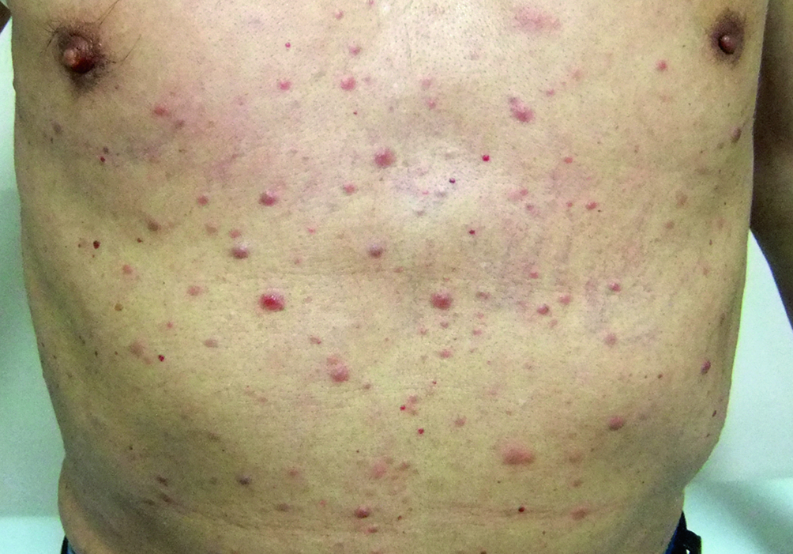
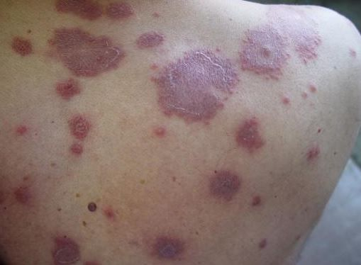
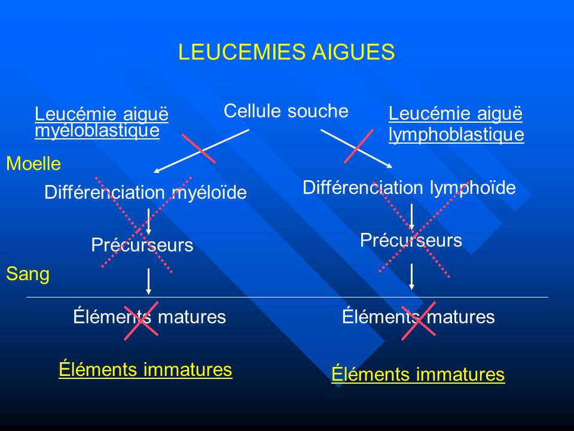

Leucémies.
Description
Les Leucémies Aiguës (LA) constituent un ensemble d'hémopathies malignes caractérisées par l'expansion clonale dans la moelle osseuse de précurseurs des cellules sanguines bloqués à un stade précoce de leur différenciation, les blastes. Il s'agit d'une affection rare (4-5 cas /100 000ha/an, environ 3000 nouveaux cas par an en France). On distingue deux grands types : les Leucémies Aiguës Myéloïdes (LAM), dont la fréquence augmente avec l'âge (médiane autour de 65 ans) et les Leucémies Aiguës Lymphoblastiques (LAL), surtout observées chez l'enfant, mais aussi chez l'adulte après 50-60 ans (la LAL représente 1/3 des cancers de l'enfant).
Le diagnostic et le pronostic reposent sur l'examen morphologique des blastes du sang et de la moelle osseuse, l'immunophénotype et l'étude cytogénétique et moléculaire.
Causes.
Signes en rapport avec une anémie, d'installation rapide et de ce fait souvent mal tolérée.
Signes infectieux en rapport avec la neutropénie, classiquement de la sphère ORL (allant jusqu'à l'angine ulcéro-nécrotique) ; en réalité, souvent sans caractère clinique spécifique (fièvre résistant aux antibiotiques, sepsis grave).
Syndrome hémorragique cutané ou muqueux, ou hémorragies extériorisées, en rapport avec la thrombopénie, aggravée parfois par une Coagulation Intra- Vasculaire Disséminée (CIVD).
  